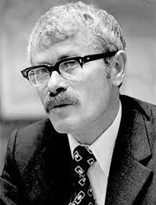

Icchokas Meras
 Icchokas Meras, gimęs 1934 m. Kelmėje – prozininkas ir scenarijų autorius, diplomuotas radijo ir televizijos inžinierius. Vaikystėje per holokaustą neteko tėvų ir pats per stebuklą likęs gyvas buvo priglobtas ir užaugintas lietuvių šeimoje. Vaikystės išgyvenimai iš dalies atsispindi pirmojoje jo apsakymų knygoje Geltonas lopas, parašytoje 1960 m. Pirmosios Mero knygos: „Geltonas lopas“, „Lygiosios trunka akimirką“, „Žemė visada gyva“, „Ant ko laikosi pasaulis“, Lietuvoje buvo sutiktos gana santūriai. Tuo metu kritikai neturėjo teisės įvardyti Mero išskirtinės vietos lietuvių prozoje, nes autorius buvo žydas. 1965 m. už romaną „Lygiosios trunka akimirką“ Meras buvo pristatytas Respublikinei premijai gauti, bet jos negavo. Daug daugiau entuziazmo Mero knygos sukėlė Rusijoje, Rytų Vokietijoje, kai kuriose Sovietų Sąjungos respublikose. Icchokui merui dažnai tekdavo perrašinėti kino scenarijus, ne visi filmai patekdavo į Sovietų Sąjungos ekranus (pagal Mero scenarijus pastatyti kino filmai „Kai aš mažas buvau“, „ Birželis, vasaros pradžia“, „Maža išpažintis“). Mero santykių su valdžia aukščiausiu įtampos tašku tapo 1971-ieji, kai Pergalės žurnale pasirodė jo romanas „Striptizas, arba Paryžius–Roma–Paryžius“. Romanas buvo publikuojamas iš anksto žinant, kad atskira knyga jis nebus leidžiamas, kad susilauks griežtos ideologinės kritikos. Meras vis tiek teikė romano rankraštį leidyklai, tačiau anoniminis recenzentas pareiškė, kad rankraščio neįmanoma pataisyti, jis yra antisovietinis. Nematydamas galimybių toliau laisvai dirbti, Meras apsisprendė emigruoti ir gavo tam leidimą. Užsienyje Meras pelnė vis didesnį populiarumą ir pripažinimą, ne vieną premiją, jo knygos, išverstos į daugybę kalbų. Visą laiką Meras rašė lietuviškai, o jo naujos knygos pasirodydavo JAV.
Kūryba
Icchoko Mero pirmasis kūrinys buvo apysaka „Geltonas lopas“, tačiau jis daugiausiai rašė romanus: „Lygiosios trunka akimirką“, „Ant ko laikosi pasaulis“, „Mėnulio savaitė“, „Sara“, „Striptizas, arba Roma-Paryžius-Roma“, „Ties gatvės žibintu“. Sukūrė ir apsakymų, apysakų: „Žemė visada gyva“, „Senas fontanas“, „Apverstas pasaulis“, „Stotelė vidukelėj“. Už savo kūrybą Icchokas Meras yra gavęs dešimtį apdovanojimų, tokių kaip Lietuvos Didžiojo kunigaikščio Gedimino ordinas, Lietuvos nacionalinė kultūros ir meno premija.
Atminimo įamžinimas
Icchoką merą galima atminti prie memorialinės lentos Rūdninkų ir Visų Šventųjų gatvių sankryžoje su Vilniaus geto planu, kuriame buvo kankinami žydai, įskaitant ir Icchoką Merą. Rašytojo kūrybos galima pasiklausyti LRT mediatekoje,„Vakaras su knyga“, aktorės Elvyros Žebertavičiūtės monospektaklyje „Tūkstantis, tūkstantis, tūkstantis mylių”, sukurtame pagal Icchoko Mero apsakymą.
Galerija